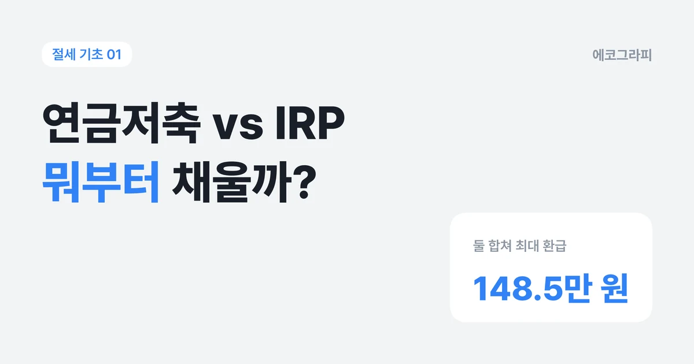
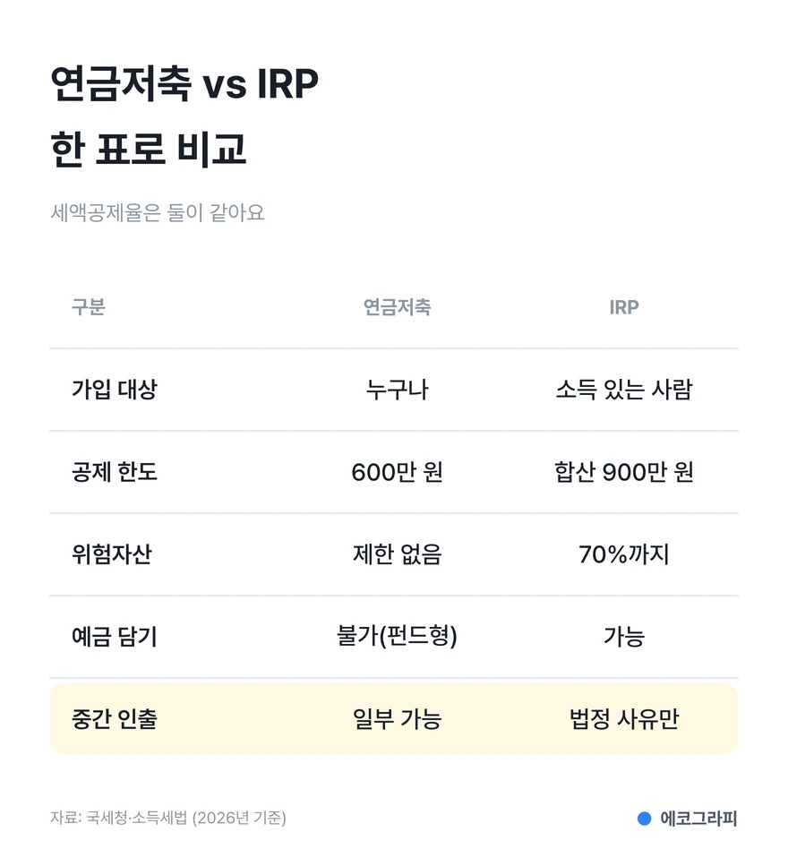
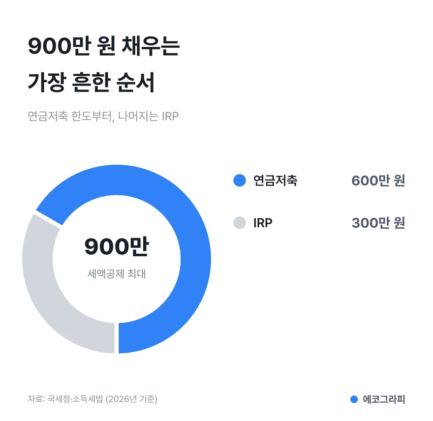
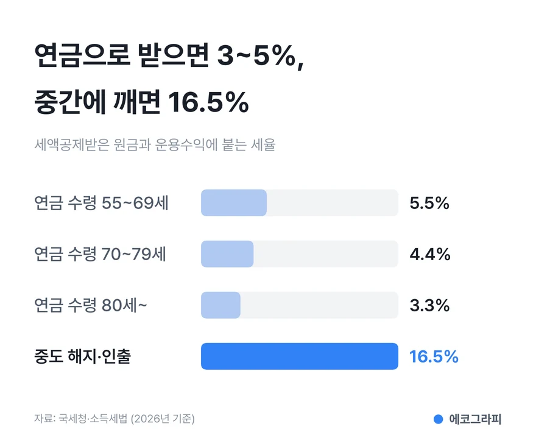
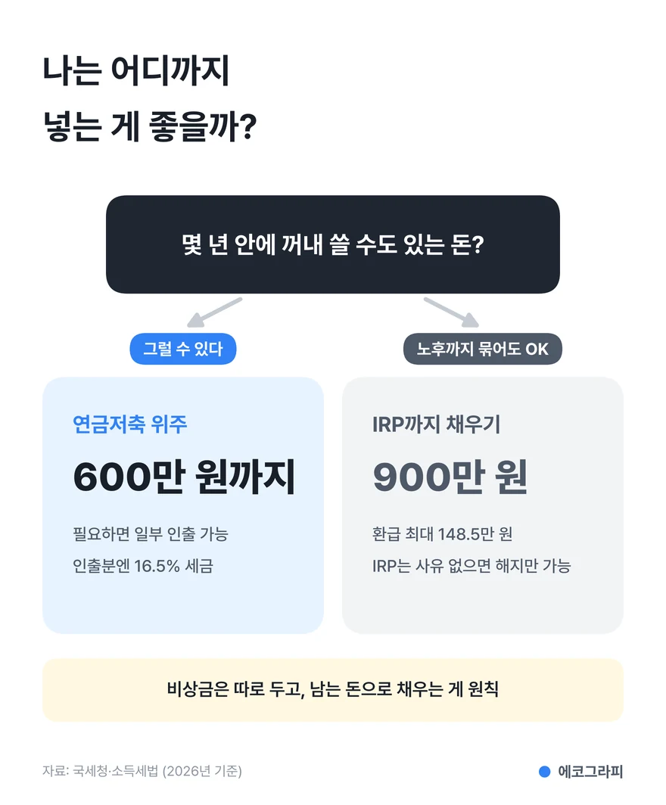

연금저축과 IRP(개인형 퇴직연금)는 둘 다 노후 대비 계좌예요. 1년에 넣은 돈의 일정 비율을 연말정산에서 세금으로 돌려줘서, 직장인 절세의 기본으로 꼽힙니다.
900만 원을 꽉 채우면 총급여 5,500만 원 이하는 148.5만 원, 초과는 118.8만 원을 돌려받아요. 공제율 16.5%·13.2%는 지방소득세까지 포함한 숫자입니다.


연금저축만으로는 600만 원까지만 공제돼요. 그래서 900만 원을 다 채우려면 최소 300만 원은 IRP에 넣어야 합니다. 인출이 자유로운 연금저축을 먼저 채우고, 여유가 있으면 IRP를 더하는 방식이 가장 흔해요.
올해분은 12월 31일 입금까지 인정돼요. 연말엔 이체가 몰리니 며칠 여유를 두고 넣으세요. 연말정산 전체 체크리스트는 절세 코너의 연말정산 글에 있어요.
세금을 돌려받은 대신, 나중에 꺼낼 때 세금을 냅니다. 55세 이후(가입 5년 이상) 연금으로 나눠 받으면 3.3~5.5%로 낮지만, 중간에 깨면 16.5%예요.

총급여 5,500만 원 초과라 13.2%를 돌려받았는데 중간에 해지하면 16.5%를 내야 해요. 받은 것보다 더 내는 구조라, 비상금까지 끌어다 채우면 손해일 수 있어요.
연금으로 받는 사적연금이 1년에 1,500만 원을 넘으면 종합과세와 16.5% 분리과세 중 하나를 골라야 해요. 대부분의 직장인에겐 먼 이야기지만 알아두면 좋아요.

네, 많이들 그렇게 해요. 연금저축 600만 원 + IRP 300만 원이 가장 흔한 조합이에요.
운용·자산관리 수수료가 붙는 곳이 있어요. 비대면 개설 시 수수료를 면제하는 증권사가 많으니 가입 전에 비교해 보세요.
아니요. ETF와 펀드만 가능해요. 레버리지·인버스 ETF도 담을 수 없어요.
본인이 추가로 넣은 금액은 IRP와 같은 900만 원 한도 안에서 공제돼요.
세액공제는 본인이 낸 세금에서 빼주는 거라, 소득(세금)이 없으면 공제 효과가 없어요.
※ 2026년 11월 기준으로 정리한 글입니다. 세율·제도는 바뀔 수 있으니 거래 전 증권사·국세청 안내를 한 번 더 확인하세요. 특정 종목·상품의 매수·매도 권유가 아닙니다.